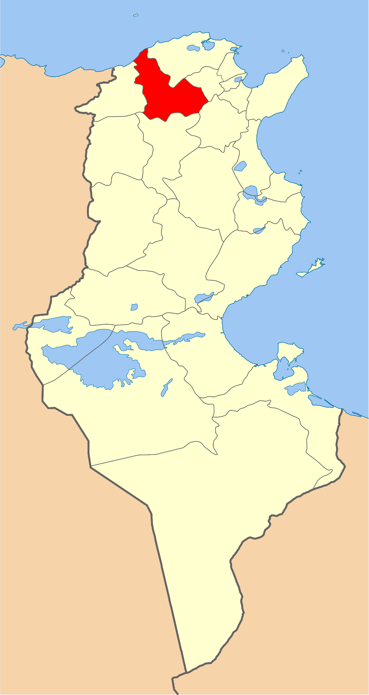
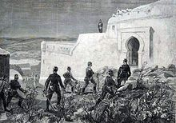
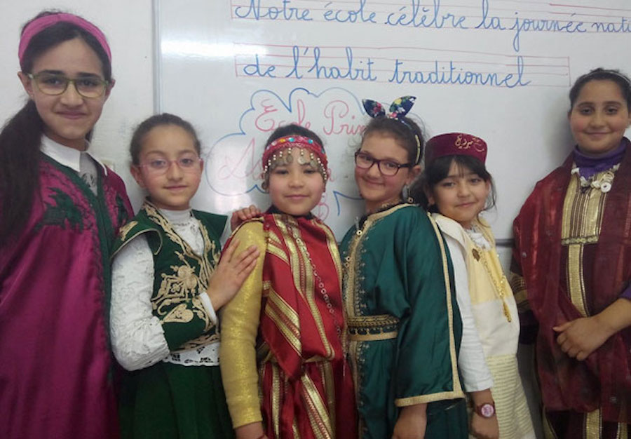
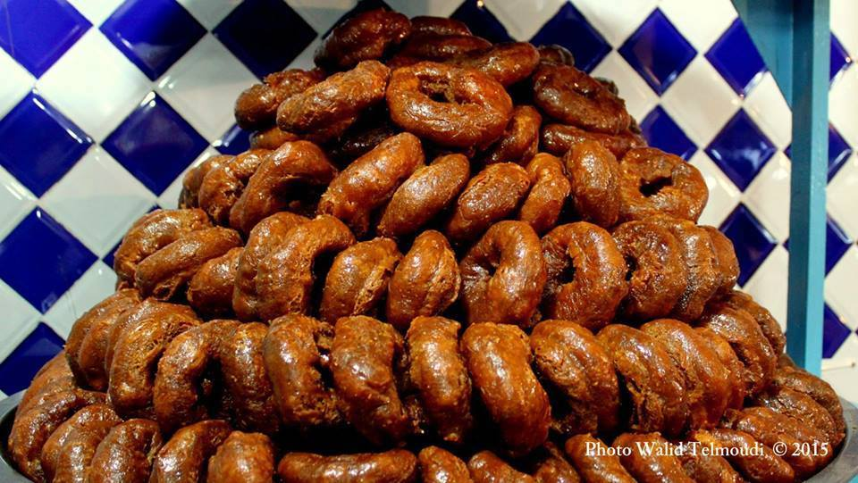
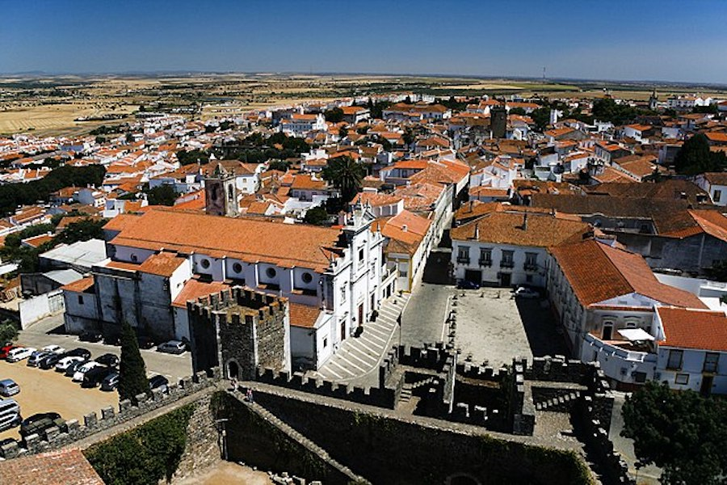
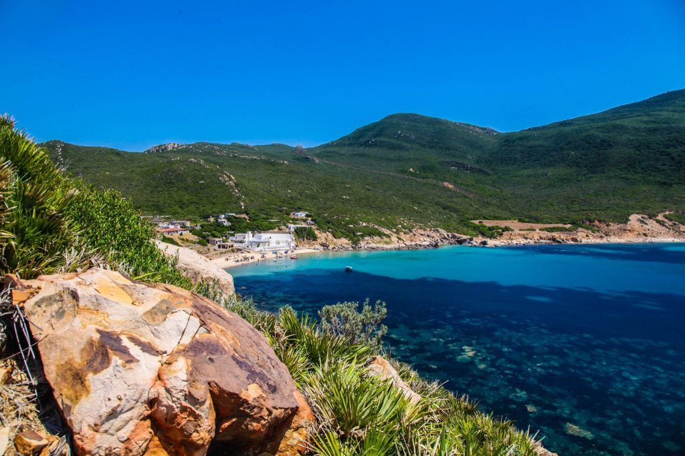

Beja
Situé au Nord-Ouest de la Tunisie, le Gouvernorat de Béja occupe une position centrale qui lui permet d´être un axe médian entre le littoral et l´Ouest du pays. Faisant frontière avec cinq autres gouvernorats et une petite ouverture sur la mer (un littoral de 26 km), le gouvernorat de Béja est traversé par les axes routiers les plus importants qui relie l´Est à l´Ouest du pays ainsi que la voie ferrée reliant la capitale Tunis à la frontière algérienne.
Kouchbatia
Djebel Gorra
Dogga
Aïn Tounga
Quelques chiffres
Superficie
3 740 Km²
Nombre de maisons
39 000
Habitants
303 032
Localisation
Situé à 105 kilomètres de la capitale, le gouvernorat de Béja constitue une zone de liaison géographique entre les gouvernorats voisins. Il est délimité par la mer Méditerranée (26 kilomètres de littoral au nord), le gouvernorat de Bizerte au nord-est, le gouvernorat de la Manouba à l'est, le gouvernorat de Zaghouan au sud-est, le gouvernorat de Siliana au sud et le gouvernorat de Jendouba à l'ouest.

Histoire
Vaga, c'est ainsi qu'elle s'appelait au temps des Romains, a connu de multiples péripéties. D'origine libyque puis carthaginoise. Elle connut un essor économique important sous le règne du roi numide Massinissa puis de son fils Jugurtha (116 ab J-C). Passé sous contrôle romain, l'empereur Septime Sévère lui conféra le statut de Municipe. Elle connut l'invasion vandale puis byzantine. Elle devint un point stratégique important sous le règne de Justinien qui y fit construire des remparts et une citadelle dont les vestiges sont visibles jusqu'à nos jours. Ce rayonnement se poursuivit pendant l'ère Aghlabide.

Culture

hover me
hover me
hover me
hover me